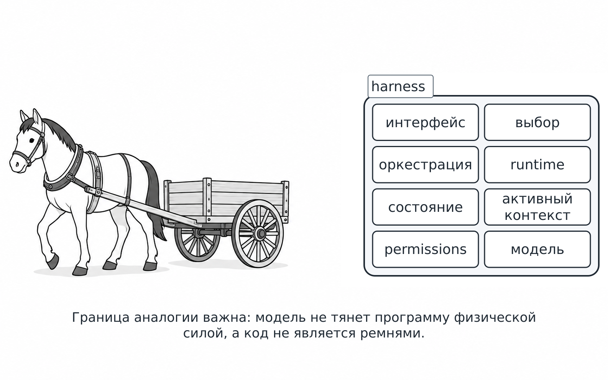
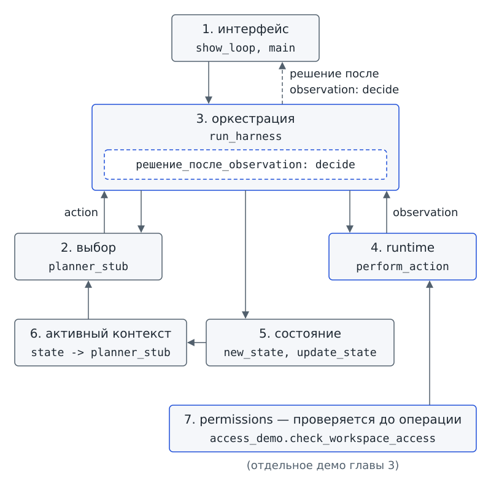
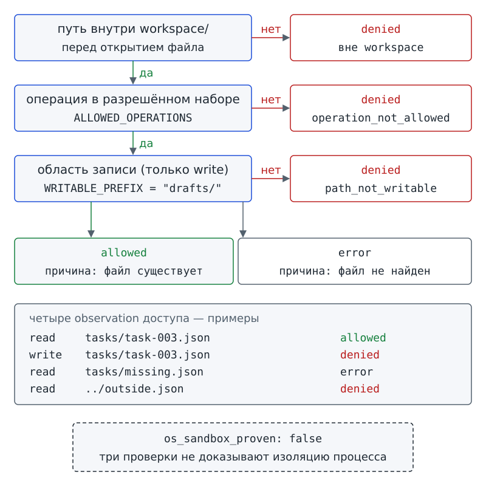

Глава 3. Agent harness: что работает вокруг модели?¶
Два одинаковых вывода¶
В главе 2 программа-помощник «Дежурный» научилась принимать решения по результатам действий. Сегодня Аня принесла в бюро две версии программы. Знакомый файл loop_demo.py содержит первую версию, а новый файл harness_demo.py содержит вторую версию. По ссылкам доступны полные тексты программ. Оба запуска выполни из корня starter, то есть из самой папки учебного комплекта, как во врезке «Как устроен наш практикум» главы 1. До запуска предположи, достаточно ли совпадения результатов, чтобы узнать устройство программ. Запусти первую программу:
# запуск из корня starter
python loop_demo.py --scenario one_match
step: 1
state: observed
action: read_task_cards
observation: {"ok": true, "matches": ["task-003"]}
decision: success
Теперь запусти вторую программу:
# запуск из корня starter
python harness_demo.py --scenario one_match
step: 1
state: observed
action: read_task_cards
observation: {"ok": true, "matches": ["task-003"]}
decision: success
Выводы совпадают побайтно, то есть полностью, включая пробелы и переносы строк. В главе 1 мы уже видели, что одинаковый текст на экране может скрывать разное устройство программ. Значит ли одинаковый вывод, что программы устроены одинаково?
Вопрос-Прогноз. Что нужно увидеть, кроме пяти строк результата, чтобы сравнить устройство двух программ, а не только их результат? Запиши версию.
В пяти строках вывода ты уже узнаёшь запись шага из главы 2:
stepпоказывает номер шага;stateотмечает этап;actionназывает выполненную операцию;observationсодержит полученное наблюдение;decisionсообщает принятое решение.
Значение observed сообщает, что результат сохранён, а значение success означает, что цель этого учебного случая достигнута.
Глава 2 закончилась вопросом: какая программная среда вокруг модели хранит состояние, исполняет разрешённые действия, применяет ограничения и возвращает observation? Мы найдём такую среду в знакомой программе, дадим ей имя и разберём обязанности её частей.
Главный вопрос главы. Как код вокруг компонента выбора организует выполнение, хранит данные текущего запуска и проверяет, какие операции разрешены?
После главы ты сможешь¶
- находить в схеме и в коде семь частей программы вокруг компонента выбора и объяснять их обязанности;
- отличать выбор действия от решения после полученного observation;
- различать выполнение операции и управление порядком вызовов;
- отличать сведения, переданные для текущего выбора, от данных всего запуска и от внешнего файла;
- объяснять, кто выбирает информацию для конкретного обращения;
- предсказывать результат проверок пути и операции;
- отличать текстовую просьбу и отдельную проверку в коде от среды, технически ограничивающей последствия выполнения.
Урок 5. Кто организует знакомый цикл¶
1. Начинаем со знакомых обязанностей¶
Вспомни упряжь: ремни и вожжи, которые соединяют лошадь с повозкой. В английском языке упряжь называют harness. Одной силы лошади недостаточно: нужна упряжь, которая передаёт эту силу повозке, а вожжи позволяют задавать направление и удерживать лошадь. Лошади в этом сравнении соответствует модель, а упряжи соответствует программная среда вокруг модели. Такую среду называют harness (упряжь), или agent harness. На экскурсии мы называли её обвязкой.
У аналогии есть предел. Модель не тянет программу физической силой, а код не состоит из ремней. Программа принимает данные, вызывает функции и применяет проверки в определённом порядке. Сравнение с упряжью помогает представить связь частей, но устройство и надёжность программы нужно устанавливать по её коду.
Вместе с циклом из главы 2 ты уже построил harness. Открой loop_demo.py и задай себе вопрос:
Где в
loop_demo.pyуже живёт harness?
Функции с именем harness в файле нет. Ищи обязанности: какую работу должна выполнить программа, чтобы состоялся один шаг цикла? В знакомом коде можно найти пять таких обязанностей:
show_loopпринимает параметры запуска и показывает результат человеку;planner_stubвыбирает действие, но сам его не выполняет;run_loopвызывает остальные функции в нужном порядке, от выбора действия до решения после observation;perform_actionфактически выполняет учебное действие в среде;new_stateиupdate_stateсоздают и меняют состояние запуска.
Пять найденных обязанностей образуют первые пять частей карты harness; эту карту мы будем собирать всю главу:
| Часть | Что делает в starter | Где увидеть |
|---|---|---|
| Интерфейс | Разбирает параметры команды и печатает результат | show_loop; в новом файле также main |
| Выбор | В этом опыте всегда предлагает read_task_cards |
planner_stub |
| Оркестрация (orchestration), управление порядком работы | Задаёт порядок конкретных вызовов | run_loop, затем run_harness |
| runtime (среда выполнения), исполнение выбранной операции | Вызывает учебное выполнение действия | perform_action |
| Состояние | new_state создаёт словарь, update_state сохраняет observation и счётчики |
new_state, update_state |
Здесь легко объединить planner_stub и decide: обе функции «что-то решают». Но planner_stub выбирает действие до выполнения, а decide вызывается после observation, в том же шаге. Вызов decide относится к порядку работы, который поддерживает оркестрация. Сохрани знакомое из главы 2 различие: выбор действия и решение после результата занимают две разные точки цикла.

Фигура 6. Упряжь и модель: где кончается аналогия
2. Машина вокруг работающего цикла¶
Цикл из главы 2 проходит в знакомом порядке:
- Компонент выбора предлагает действие.
- Программа выполняет действие.
- Программа получает observation.
- Программа обновляет состояние.
- Программа принимает решение.
Но кто вызывает функции и хранит состояние? Кто перехватывает ошибки и проверяет, разрешена ли операция? За такую работу отвечает harness.
Harness — программная среда вокруг модели, которая организует цикл, выполнение действий, состояние, ограничения, ошибки и взаимодействие с человеком. Определение объединяет обязанности, которые мы нашли в знакомом цикле. Речь идёт о совокупности обязанностей, а не об одном обязательном файле или названии функции.
Harness нельзя считать разновидностью модели или названием её способности рассуждать. В нашем starter обязанности harness выполняет обычный Python-код. В обязательных опытах этой главы живой модели нет: planner_stub остаётся заранее заданной учебной заменой компонента выбора и при каждом обращении предлагает одну и ту же операцию. Выбор не меняется, а harness всё равно организует работу программы.
3. Выполнение и порядок работы отвечают на разные вопросы¶
Как отличить выполнение операции от управления порядком работы? Проследим один шаг цикла и найдём обе обязанности в цепочке вызовов:
planner_stub → action → perform_action → observation → update_state → decide
В цепочке есть вызов, который выполняет действие, и есть порядок, в котором сделаны все вызовы. Различие этих двух обязанностей пригодится во всех следующих главах.
Runtime — часть программной среды, в которой фактически выполняются программы, функции или команды.
В учебном цикле runtime виден в вызове perform_action(action, state). Функция получает выбранное действие, выполняет его и возвращает observation. Функция perform_action не выбирает цель и не решает, завершён ли запуск. Исполнителя можно условно сравнить с «руками» системы.
Но исполнитель в нашем цикле тоже учебный: perform_action возвращает подготовленное observation, а не открывает файлы. Сравнение с руками показывает, кто отвечает за выполнение. Сама аналогия не доказывает, что в каждом опыте произведено физическое действие.
Оркестрация — программная логика, которая связывает этапы работы, маршрутизацию, вызовы и проверки. Маршрутизация здесь означает выбор того, какому участку программы передать работу дальше.
Оркестрация не означает «рассуждение модели». Обычный код задаёт порядок операций:
- вызывает выбор действия;
- вызывает выполнение;
- сохраняет observation;
- принимает решение по сохранённому результату.
Роль оркестрации можно сравнить с ролью дирижёра: дирижёр не играет на инструментах, но задаёт, кто и когда вступает. В программе вместо дирижёра работают явные вызовы и условия. У программы нет слуха или намерений. Например, код должен вызвать сохранение результата раньше проверки завершения, иначе решение будет основано на старых данных.
Проверь себя на ходу. Если
perform_actionвернула observation, аupdate_stateне была вызвана, к какой части программы относится ошибка: к runtime или к оркестрации?
4. Выносим управление порядком и не ломаем главу 2¶
В этом практикуме loop_demo.py из главы 2 остаётся без изменений: полный текст программы напечатан в учебнике, и с ним связаны эталонные выводы. Поэтому в starter есть второй файл, harness_demo.py. Новый файл использует знакомые функции, а оркестрацию, то есть порядок шагов, выделяет под более точным именем.
Ниже приведён фрагмент из harness_demo.py. По ссылке доступен полный файл.
# фрагмент: harness_demo.py
def run_harness(
scenario="one_match",
max_steps=MAX_STEPS,
max_retries=MAX_RETRIES,
):
state = new_state(scenario, max_steps, max_retries)
events = []
while not state["done"]:
action = planner_stub(state)
observation = perform_action(action, state)
update_state(state, observation)
decision = decide(state)
events.append({
"step": state["steps"],
"state": state["phase"],
"action": action,
"observation": observation,
"decision": decision,
})
state["done"] = decision != "continue"
if state["done"]:
state["terminal"] = decision
return {"terminal": state["terminal"], "state": state, "events": events}
Положи рядом run_loop из главы 2 и сравни код строку за строкой. Что изменилось: имя функции или правила работы цикла? Имя изменилось и обозначило ответственность за оркестрацию, а проверяемые правила остались прежними:
- цикл сохраняет четыре стадии и принимает решение после observation;
continueразрешает новый шаг, но не становится терминалом;success,needs_input,error,limitзавершают запуск;- решение принимает та же функция, что в
run_loop, и по-прежнему не читает имя сценария.
Обрати внимание на update_state: функция выполняет внутреннюю работу harness, а не добавляет новый tool (инструмент). В этом опыте обновляется только состояние запуска; статус карточки проекта никто не записывает.
В начале главы мы сравнили выводы только одного сценария. В starter есть и более широкая техническая проверка: она сравнивает полные результаты run_harness и run_loop на всех семи подготовленных сценариях. Такую проверку совпадения результатов называют тестом эквивалентности.
Семь проверенных случаев дают больше сведений, чем один, но не охватывают любые входы. Проверка подтверждает совпадение результатов на этих семи случаях и не заменяет чтение кода: границы вывода должны совпадать с границами проверки.
5. Что одинаковый вывод доказывает, а чего нет¶
Вернись к вопросу-прогнозу из начала главы. Легко решить, что пять совпавших строк означают одинаковое устройство программ. Но совпадение показывает только результат в проверенном сценарии.
Представим две программы бюро, которые печатают название одной карточки. Первая программа читает название из файла, вторая хранит готовую строку. Выводы могут совпасть, хотя программы получают текст разными способами. По одному выводу различить способы не получится.
Устройство нужно искать в коде. В нашем практикуме код harness_demo.py показывает, что ответственность за оркестрацию названа и отделена. Совпавший вывод сам по себе такого различия не раскрывает.
Новое имя функции тоже не доказывает правильности программы: при переделке можно нарушить прежнюю работу, даже если части названы понятно. Поэтому нужны два вида свидетельств:
- схема ответственности объясняет устройство;
- тест эквивалентности защищает прежнее поведение на проверяемых случаях.
Схема объясняет устройство, тест защищает прежнее поведение. Сохрани эту пару обязанностей: она понадобится, когда ты будешь переделывать работающую программу.
6. Ещё одна обязанность: выбрать, что доступно сейчас¶
Вернёмся к доске бюро. Представь, что до фестиваля доска разрослась до ста карточек всех групп. Кроме карточек у программы есть журнал прошлых запусков «Дежурного» и длинное описание задачи. Нужно ли передавать все сведения компоненту выбора при каждом обращении? Не обязательно. Вспомни главу 1: контекст содержит сведения конкретного обращения, а не всё, что есть в проекте.
Допустим, для текущего выбора нужны сведения только о двух из ста карточек. Приложение может передать данные о двух карточках, а сведения об остальных 98 оставить в файлах. Все сто карточек остаются в проекте, но в конкретном обращении участвуют только выбранные сведения.
Большой объём сам по себе не гарантирует, что передана нужная информация. Приложение должно определить:
- какие сведения понадобятся сейчас;
- какие сведения можно сократить;
- какие сведения можно оставить во внешнем файле до следующего шага.
Информацию, доступную для текущего обращения, будем называть активным контекстом. Знакомое понятие контекста здесь уточнено словами «доступен сейчас». Запись может находиться в файле, но одного наличия записи недостаточно, чтобы запись попала в активный контекст.
Управление контекстом (context management) — решение о том, что оставить в активном контексте, что сократить, записать во внешнее состояние или загрузить позже. Приложение готовит сведения для определённого шага, но не выбирает ответ за модель. Управление контекстом также не обещает, что все сведения проекта сохранятся в одном обращении.
В planner_stub живой модели нет, поэтому мы не имитируем обращение к модели. Но механизм подготовки сведений можно и нужно спроектировать: отметить, какие данные harness передал бы компоненту выбора, а какие оставил бы снаружи. Эту часть карты закончим на следующем уроке.
7. Мини-проверка урока 5¶
Сопоставь работу и функцию.
- Выбрать действие.
- Выполнить действие.
- Сохранить observation.
- Связать этапы в порядке.
- Принять решение после observation.
- Показать результат человеку.
Функции: show_loop, planner_stub, perform_action, update_state, run_harness, decide.
Ответы¶
1 — planner_stub; 2 — perform_action; 3 — update_state; 4 — run_harness; 5 — decide; 6 — show_loop.
Допустима подпись «управление циклом» рядом с run_harness, если на схеме всё равно отдельно видны planner_stub до действия и decide после observation. Подпись «выбор и решение» одной точкой не засчитывается.
8. Практика A: карта из пяти частей¶
Работай в группе. Возьми карточки функций и пять карточек частей: интерфейс, выбор, оркестрация, runtime, состояние.
- Разложи функции по частям.
- Проведи путь действия (action) и путь observation.
- Помести
decideвнутрь оркестрации после observation. - Защити одну стрелку: объясни, что сломается, если стрелку переставить.
Результат: первые пять частей карты harness v0.1.
9. Практика B: найди и вынеси¶
Начни с вопроса: «Где в loop_demo.py уже живёт harness?» Отметь первые пять частей в loop_demo.py и в school_agent/lesson_support.py.
До второго запуска запиши прогноз:
Совпадут ли выводы
run_loopиrun_harness? Почему одного совпавшего запуска недостаточно для доказательства?
Затем сравни два запуска из начала главы. В harness_demo.py найди полный run_harness и соотнеси его строки с прежним run_loop.
Результат: карта harness v0.1 из пяти частей с именами функций и письменный прогноз.
10. Выходной билет урока 5¶
Назови одну работу, которую выполняет harness, но не planner_stub. Покажи соответствующую строку или функцию starter.
Урок 6. Что видно сейчас и что действительно разрешено¶
1. Две фразы — две разные границы¶
На следующий день Марк спросил: «А “Дежурный” может сам проставить в карточке статус done, когда я закончу?» Аня напряглась: «А вдруг он проставит не там? Я ему напишу в задании: “Ничего не меняй и не выходи из рабочей папки”». Сравни две фразы:
«Пожалуйста, не выходи из рабочей папки».
и
«Перед открытием файла код проверяет путь; перед записью код проверяет разрешённую операцию».
Первая фраза сообщает требование. Вторая фраза описывает механизм проверки, который выполняет программа. Текстовую просьбу могут проигнорировать или неверно понять. Другой текст может переопределить просьбу.
В показанном коде проверки выполняются независимо от формулировки задания. Но описание механизма тоже не доказывает, что операция будет остановлена: для такого вывода нужны код и проверочные запуски. Кроме того, названный механизм ограничивает не все действия программы. Чтобы точно увидеть границы проверок, сначала отделим сведения, доступные компоненту выбора, от разрешённых операций.
2. Почему нельзя передать всё сразу¶
В главе 1 мы отделили контекст конкретного обращения от всех данных проекта. Теперь возникает другой вопрос: какой объём выбранных сведений модель может использовать за один вызов? Такой объём ограничен.
Окно контекста (context window) — ограниченный объём информации, который модель может использовать в конкретном вызове. Окно контекста задаёт границу объёма, а не список всех файлов проекта. Состав сведений и допустимый объём нужно различать: даже маленький файл не окажется в обращении сам собой.
Числовое значение запоминать не нужно: допустимый объём зависит от конкретной модели, а живую модель мы пока не вызываем. Для устройства нашей программы нужен другой вывод: наличие файла в проекте ещё не означает, что содержимое файла оказалось в активном контексте.
В таблице workspace/ обозначает рабочую папку учебного приложения. Путь ../outside.json предлагает подняться на папку выше и открыть файл снаружи. Запись пути относительно выбранной папки называется относительным путём; такая запись не задаёт полный адрес от начала диска. Последняя колонка показывает, что правила приложения не разрешают доступ по указанному внешнему пути.
Разнеси примеры по четырём колонкам и сверь распределение с таблицей:
| Пример | Активно сейчас | Состояние запуска | Внешний файл | Недоступно по политике |
|---|---|---|---|---|
title выбранной карточки, переданный для выбора |
✓ | |||
steps и последнее observation |
✓ | |||
workspace/tasks/task-003.json между запусками |
✓ | |||
../outside.json |
✓ |
Один и тот же фрагмент данных со временем может переходить из колонки в колонку. Содержимое внешнего файла не станет активным контекстом, пока harness не прочитает разрешённые данные и не выберет сведения для передачи. После вызова часть результата можно оставить в состоянии или сохранить снаружи. Программа выбирает, какие сведения будут доступны для обращения; модель не получает способности «видеть проект» целиком. Так работает управление контекстом.
3. Единая карта из семи частей¶
На уроке 5 мы нашли пять частей программы. К пяти частям добавим ещё две: активный контекст и технические права доступа. Получится карта из семи частей; состав карты дальше не меняется.
Permissions (разрешения) — технически заданные права на чтение, запись, сеть, процессы или другие ресурсы. Процесс — работающая программа. Например, запрет создавать новые процессы ограничивает запуск других программ. Права определяют, что разрешено выполнять, а не только что модель видит в текущем обращении.
flowchart TD
I["1. Интерфейс"] --> O["3. Оркестрация"]
O --> V["2. Выбор: planner_stub"]
V -->|action| O
O --> R["4. Runtime"]
P["7. Permissions"] --> R
R -->|observation| O
O --> S["5. Состояние"]
S --> C["6. Активный контекст"]
C --> V
O -. "решение после observation: decide" .-> I
Стрелка от permissions к runtime пока обозначает обязанность в устройстве системы. Проверка доступа выполняется в отдельном демо и ещё не подключена к runtime учебного цикла. Соединять их будем постепенно: в главе 6 контракт операции запретит модели передавать путь, в главе 7 диспетчер начнёт проверять имя операции до вызова, а полная политика прав появится в главе 14.
Семь частей карты во всех заданиях одинаковы:
- интерфейс;
- выбор;
- оркестрация;
- runtime;
- состояние;
- активный контекст;
- permissions.
На карте decide показан отдельно внутри оркестрации. Выбор действия происходит до выполнения, а решение по observation принимается после выполнения; объединять эти точки нельзя.
4. Права доступа проверяются до операции¶
Вернёмся к вопросу Марка про запись. Где программа должна остановить запрещённую операцию? До того, как операция начнёт выполняться.
В обязательной практике есть две файловые операции: read означает чтение, write означает запись. В access_demo.py имена ALLOWED_OPERATIONS и WRITABLE_PREFIX обозначают постоянные настройки, или константы. Настройка ALLOWED_OPERATIONS хранит набор разрешённых операций; frozenset создаёт набор, который нельзя изменить по элементам. Настройка WRITABLE_PREFIX задаёт разрешённое начало пути для записи, drafts/, то есть папку черновиков. По умолчанию разрешена одна операция, а для записи дополнительно задана область:
# фрагмент: access_demo.py
ALLOWED_OPERATIONS = frozenset({"read"})
WRITABLE_PREFIX = "drafts/"
Фрагмент взят из access_demo.py, отдельного демонстрационного файла проверки доступа. Параметр --path получает интерфейс приложения и передаёт проверке harness. Функция planner_stub путь не получает; будущей модели путь тоже передаваться не будет.
Само имя константы ничего не запрещает. Настройка ограничивает выполнение лишь там, где программа проверяет операцию до исполнения. В следующем фрагменте условие operation not in ALLOWED_OPERATIONS означает «операции нет в разрешённом наборе».
Вызов _observation собирает результат проверки. Значения в результате объясняют отказ:
deniedозначает, что в доступе отказано;inside_workspaceсообщает, что путь находится внутри рабочей папки;operation_not_allowedуказывает, что операция не разрешена.
Подчёркивание в имени _observation не даёт функции дополнительных прав. Прочитай ветку проверки:
# фрагмент: access_demo.py
if operation not in ALLOWED_OPERATIONS:
return _observation(
operation,
relative_path,
"denied",
"inside_workspace",
"operation_not_allowed",
)
Заметь принцип, который пригодится в главе 15: поле вроде "allowed": true внутри карточки не меняет набор разрешённых операций. Право назначает код harness, а не текст в данных.
Байтами называют единицы представления данных в файле. Когда ниже сравнивают байты, проверяют содержимое файла, а не только его имя.
В полном файле есть target.write_text(...), то есть настоящая запись. Техническая проверка устроена так:
- временно добавляет
writeв разрешённые операции; - направляет запись на служебный черновик во временной папке;
- проверяет, что байты черновика изменились.
В обычном запуске операция write останавливается раньше: метод записи даже не вызывается.
Запись в этом демо реально достижима, но до записи работает проверка допуска, которую иногда называют гейтом. Код либо пропускает операцию, либо возвращает отказ. Даже если проверка операции временно разрешит write, второй гейт оставит доступной только область workspace/drafts/. При попытке записи в учебную карточку проверка вернёт denied/path_not_writable, а карточка не изменится.
Теперь можно ответить Марку: в будущей версии «Дежурный» сможет предложить изменение статуса. Применять изменение будет отдельный код только после подтверждения человека. Разрешение записи в черновики не разрешает менять карточки: в этом демо карточки защищены и при включённой операции write.
5. Почему трёх проверок недостаточно для полной изоляции¶
Sandbox (изолированная среда) — техническая среда, ограничивающая возможные последствия выполнения. Ограничения задаются вокруг выполняемой программы. Одна проверка пути отвечает лишь за один способ доступа к файлам и не описывает все возможные действия процесса.
Какие ограничения проверяет наше демо? Проследим три проверки по порядку:
- Функция
resolve_workspace_pathизschool_agent/paths.pyпроверяет, куда фактически ведёт путь. Запись..поднимает на родительскую папку, а символическая ссылка перенаправляет файловое имя к другому месту. После обработки таких переходов путь должен остаться внутриworkspace/. - Гейт операции проверяет
readилиwrite. - Отдельный гейт записи проверяет, находится ли путь в области
workspace/drafts/.
Все три проверки задают конкретные технические ограничения.
Три проверки не доказывают запрет пользоваться сетью или запускать другие процессы. Проверки доступа также не доказывают, что процесс не может обращаться к ресурсам другим кодом. Поэтому называть три проверки полной изоляцией средствами операционной системы нельзя.
6. Четыре observation доступа¶
Для каждой из четырёх команд сначала предскажи результат: allowed («разрешено»), denied («отказано») или error («ошибка выполнения»). Объясни причину своего прогноза и только потом выполняй команду.
«Должен»: существующий файл внутри workspace¶
# запуск из корня starter
python access_demo.py --access read --path tasks/task-003.json
операция: read
путь: tasks/task-003.json
результат: allowed
граница: внутри workspace
причина: файл существует
Разрешённая ветка действительно открывает файл для чтения, но не печатает содержимое файла. В этом запуске ты проверяешь доступ, а не читаешь карточку.
«Не должен»: запись остановлена гейтом¶
# запуск из корня starter
python access_demo.py --access write --path tasks/task-003.json
операция: write
путь: tasks/task-003.json
результат: denied
граница: внутри workspace
причина: операция запрещена политикой демо
Файл существует, но write отсутствует в ALLOWED_OPERATIONS. Проверка останавливает запись: ветка записи не открыла файл, байты файла не изменились.
«Ошибка»: допустимого файла нет¶
# запуск из корня starter
python access_demo.py --access read --path tasks/missing.json
операция: read
путь: tasks/missing.json
результат: error
граница: внутри workspace
причина: файл не найден
Расположение файла допустимо, операция разрешена, но самого файла нет. Значение error в этом выводе относится к локальной проверке доступа. Здесь не запускается новый цикл и не меняется значение терминала из главы 2.
«Граница»: путь выходит из workspace¶
# запуск из корня starter
python access_demo.py --access read --path ../outside.json
операция: read
путь: ../outside.json
результат: denied
граница: вне workspace
причина: путь выходит за workspace
Программа отклоняет путь до открытия файла. При отказе программа не сообщает, где на диске лежит рабочая папка, чтобы не давать лишнюю подсказку.
Если на уроке мало времени, обязательно выполни первые две проверки. Случаи «ошибка» и «граница» выполни при самостоятельной сверке до конца главы: без них не видно различия между отсутствующим файлом и запрещённым путём.
7. Короткое авторское действие в Track B¶
Теперь ты восстановишь несколько строк программы. В эталонном starter обработка отсутствующего файла уже заполнена, чтобы команды и эталонные выводы можно было воспроизвести. Сделай отдельную рабочую копию всей папки starter: так в рабочей копии сохранятся модули и данные. В файле access_demo.py рабочей копии найди обработку отсутствующего файла. Учитель выдаёт эту копию с пропущенной веткой либо отмечает участок для восстановления.
Ветка — участок, выполняемый при указанном условии. FileNotFoundError обозначает ошибку Python «файл не найден». Восстанови ветку по требованию:
При
FileNotFoundErrorвернутьstatus="error",boundary="inside_workspace",reason="not_found".
Не открывай блок «Эталон ветки практики B» в конце главы, пока не попробуешь сам.
- Предскажи три значения результата.
- Восстанови ветку и сохрани свой
access_demo.py. - Снова выполни команду «ошибка» из корня рабочей копии starter.
- Сравни вывод с
access_missing.txt. - Только после сравнения вывода сверь код с эталоном.
В эталоне девять строк вместе со строкой-меткой. Обработка ошибки нужна не для запрета пути, а для различения допустимого отсутствующего файла и выхода за workspace/.
8. Один результат в двух формах¶
Если время урока закончилось, разделы 8 и 9 выполни как самостоятельную сверку до следующего занятия: они закрепляют форматы вывода и итоговую карту, но не добавляют новой обязательной практики.
По умолчанию access_demo.py печатает пять понятных строк. Для машинно-читаемого вывода служит знакомая запись JSON с именами полей. Программа выводит результат в JSON только по явному флагу, дополнительному переключателю команды. Здесь таким флагом служит --json, как в главе 1. Перед запуском предположи: изменится право чтения или только способ показать результат?
# запуск из корня starter
python access_demo.py --access read --path tasks/task-003.json --json
{"operation": "read", "path": "tasks/task-003.json", "status": "allowed", "boundary": "inside_workspace", "reason": "existing_file", "os_sandbox_proven": false}
Флаг --json изменил форму вывода, а не право чтения. Посмотри на последнее поле: os_sandbox_proven: false. Эту запись сделала сама программа. Значение false означает «нет» и предупреждает, что полная изоляция не доказана. Но предупреждение не служит независимым доказательством.
Программа могла бы написать и true; смена надписи не изменила бы ограничений. Доказательства дают конкретный код и проверки. Здесь проверены путь, операция и область записи, а не вся среда операционной системы.
В таблице приведены полные эталоны обоих режимов:
| Случай | Человекочитаемый эталон | JSON-эталон |
|---|---|---|
| чтение внутри | access_read_inside.txt |
access_read_inside.json |
| запись запрещена | access_write_denied.txt |
access_write_denied.json |
| файл отсутствует | access_missing.txt |
access_missing.json |
| путь снаружи | access_outside.txt |
access_outside.json |
9. Завершаем карту из семи частей¶
Все семь частей уже известны. Предскажи подписи частей и получи эталон карты от самой программы:
# запуск из корня starter
python harness_demo.py --show-parts
интерфейс: show_loop, main
выбор: planner_stub
оркестрация: run_harness
решение_после_observation: decide
runtime: perform_action
состояние: new_state, update_state
активный_контекст: state -> planner_stub
permissions: access_demo.check_workspace_access (отдельное демо главы 3)
Семь строк без отступа обозначают семь частей карты. Дополнительная строка с отступом показывает decide внутри оркестрации и не создаёт восьмой части. Сверь эталон со своей бумажной или кодовой картой из практики.

Фигура 7. Карта harness из семи частей

Фигура 8. Три проверки допуска
10. Мини-проверка урока 6¶
Для каждого утверждения выбери подходящее понятие:
- текстовая просьба;
- управление контекстом;
- permissions;
- проверка пути;
-
sandbox.
-
«Не открывай ничего лишнего» написано в задании.
- Harness оставил в текущем вызове только одну нужную карточку.
- Операция
writeне входит в технически разрешённое множество. ../outside.jsonотклонён до открытия.- Среда ограничивает возможные последствия выполнения по нескольким видам ресурсов.
Ответы¶
1 — текстовая просьба; 2 — управление контекстом; 3 — permissions; 4 — проверка пути; 5 — sandbox.
Допустимо назвать пункты 3 и 4 частями будущего sandbox, но нельзя утверждать, что они уже доказывают полную изоляцию процесса.
11. Практика A: данные и границы¶
- Дополни бумажную карту урока 5 карточками «активный контекст» и «permissions».
- Подготовь восемь бумажных карточек данных:
- вопрос Ани и
titleзадачи, переданные сейчас компоненту выбора; stepsиfailures, оставленные в состоянии;- два файла задач, не переданные в обращение;
- два пути за пределы рабочей папки.
Разложи карточки по категориям «активно сейчас / состояние / внешний файл / недоступно». Объясни, почему в другом запуске распределение разрешённых данных может измениться.
3. Для четырёх ситуаций доступа выбери allowed, denied или error и объясни причину.
4. Найди ошибку в схеме, где planner_stub напрямую открывает ../outside.json, а для защиты добавлена только фраза «не выходи из папки».
Результат: карта harness v0.1 из семи частей и политика workspace/ из пяти правил.
12. Практика B: код и проверяемая граница¶
- Дополни карту частями «активный контекст» и «permissions».
- Найди
resolve_workspace_path,ALLOWED_OPERATIONSи реальную веткуtarget.write_text. - Восстанови ветку
FileNotFoundErrorв рабочей копии и проверь случай отсутствующего файла. - Сделай прогнозы и выполни четыре access-команды.
- Сравни человекочитаемый и JSON-режимы. Объясни, почему поле в JSON не доказывает полную изоляцию.
Результат: карта harness v0.1 и политика workspace/, дополненные именами функций и ссылками на эталоны.
13. Выходной билет урока 6¶
Поле os_sandbox_proven: false написала сама программа. Почему запись в поле os_sandbox_proven не доказывает изоляцию? Назови три проверки, которые действительно выполнены, и два ресурса, которые опыт не проверял.
Проверь себя на ходу. Приложение разрешило чтение файла. Доказывает ли разрешение на чтение, что каждая фраза внутри файла верна или разрешает новые операции? Объясни различие между доступом к данным и правами программы.
Безопасность: проверка пути — ещё не изоляция процесса¶
Текстовая просьба не ограничивает права процесса. В этой главе код проверяет только относительный путь внутри
workspace/, операцию поALLOWED_OPERATIONSи область записиworkspace/drafts/. Эти проверки реальны, но они не доказывают запрет сети, процессов или всех остальных файловых действий. Не добавляй реальные секреты в учебные файлы и не называй демо полной изоляцией средствами операционной системы.
Зачем это тебе¶
- Школьный проект. Если «Дежурный» выдал неверную сводку, карта из семи частей поможет задать вопрос о конкретной обязанности. Ошибся ли компонент выбора? Какое observation вернул runtime и вовремя ли оркестрация обновила состояние? Вместо общего «ИИ ошибся» ты сможешь указать, какое место нужно проверить.
- Папка школьного кружка. Если программа собирает учебные материалы, отдели выбор нужного файла от проверки доступа к нему. По карте можно показать, где запрещена запись и какая операция проверена до исполнения.
- Командная работа к фестивалю. Один участник меняет интерфейс, другой меняет выполнение операций, третий правит проверки. Карта показывает договорённости участников, а повторные запуски помогают обнаружить, не нарушено ли прежнее поведение.
Шаг сквозного проекта¶
Добавь к «Дежурному» — «Агенту школьного проектного бюро» — два сохраняемых результата работы.
1. Карта harness v0.1¶
Используй ровно семь частей:
- интерфейс;
- выбор;
- оркестрация;
- runtime;
- состояние;
- активный контекст;
- permissions.
Внутри оркестрации отдельно подпиши: decide после observation. Возле выбора напиши: «в обязательной практике — planner_stub, живой модели нет».
2. Политика workspace v0.1¶
- приложение принимает только относительные пути внутри
workspace/; - обязательное демо по умолчанию разрешает
readи блокируетwriteдо открытия файла; - даже разрешённый
writeограничен областьюworkspace/drafts/; - отсутствие файла отличается от выхода за границу;
- проверены только путь, операция и область записи; полная изоляция средствами операционной системы не доказана.
Так ты уточняешь устройство проекта. Нового механизма сохранения работы между запусками здесь не добавляется.
Достраиваем «Дежурног
Политика workspace v0.1 сохраняется в файле 03_workspace_policy.json: файл фиксирует разрешённые операции и область записи drafts/. В папке-примере политика специально направляет черновик в tasks/dezhurny_report.md, хотя запись разрешена только внутри drafts/. Поэтому строка save: denied | path_not_writable | tasks/dezhurny_report.md означает, что файл не создан. Действуют те же три проверки, что в access_demo.py: проверка пути, операции и разрешённой области записи.
Команда ниже обращается к папке-примеру, поэтому в выводе стоит goal: не настроено (глава 1). В твоей my_agent/ цель уже настроена; смотри на строку своей главы. Остальные служебные строки полного run читай так же, как в главе 1.
# запуск из корня starter
python dezhurny.py run --dir workspace/my_agent/examples/denied
dezhurny: run
goal: не настроено (глава 1)
config: workspace/my_agent/examples/denied
model: replay — авторский сценарий, не запись модели
scenario: success
stop_policy: max_steps 5, max_retries 1 (по умолчанию, глава 2)
tools: allowlist диспетчера (по умолчанию, глава 7)
Шаг 1 | read_task_cards | continue
Шаг 2 | validate_task_card | continue
Шаг 3 | validate_task_card | continue
Шаг 4 | validate_task_card | continue
Шаг 5 | build_status_report | success
Остановка: success
# Черновик статуса проекта
Всего задач: 3.
Незавершённых: 2.
Заблокированных: 1.
## Незавершённые задачи
- `task-002` — Подготовить макет афиши (in_progress)
- `task-003` — Проверить список оборудования (blocked)
## Блокеры
- `task-003`: Нет подтверждённого списка оборудования
Черновик. Отправка и изменение карточек не выполнялись.
contract: не настроено (глава 5)
save: denied | path_not_writable | tasks/dezhurny_report.md
state: не настроено (глава 10)
trace: не настроено (глава 12)
Качество модели не подтверждено этим техническим прогоном.
Проверь себя¶
- Что такое harness и почему harness нельзя считать моделью?
- Чем runtime отличается от оркестрации?
- Где в знакомом цикле происходит выбор, а где решение после observation?
- Назови семь частей карты harness.
- Почему файл в
workspace/не обязательно находится в активном контексте? - Чем отсутствующий файл отличается от пути
../outside.json? - Почему запрет записи в access-демо настоящий, хотя обычная команда ничего не записывает?
- Найди ошибку: «JSON сообщает
os_sandbox_proven: false, значит запись в поле доказывает, какие границы sandbox есть у программы, а каких нет».
Ответы¶
- Harness — обычная программная среда вокруг модели; он организует вызовы, выполнение, состояние, ограничения, ошибки и взаимодействие с человеком.
- Runtime фактически исполняет функцию или команду; оркестрация связывает этапы и проверки в нужном порядке.
planner_stubвыбирает действие до выполнения;decideполучает уже обновлённое после observation состояние.- Интерфейс, выбор, оркестрация, runtime, состояние, активный контекст, permissions.
- Наличие внешнего файла не передаёт его содержимое в конкретный вызов; состав активного контекста выбирает harness.
- В первом случае путь допустим, но ресурса нет —
error/not_found; во втором путь отклонён как внешний —denied/path_outside_workspace. - Ветка записи существует и выполняется в служебной временной проверке после разрешения; по умолчанию гейт операции останавливает её до
write_text, а при включённомwriteвторой гейт оставляет доступной только папку drafts. - Поле — утверждение той же программы, не независимое доказательство. Код и тесты подтверждают только три проверки: путь, операцию и область записи.
Эталон ветки практики B¶
Сверяй фрагмент только после собственной попытки. Эталон взят из полного файла access_demo.py:
# фрагмент: access_demo.py
except FileNotFoundError:
return _observation(
operation,
relative_path,
"error",
"inside_workspace",
"not_found",
)
Словарь главы¶
| Термин | Рабочая формулировка |
|---|---|
| Harness / agent harness | программная среда вокруг модели, которая организует цикл, выполнение действий, состояние, ограничения, ошибки и взаимодействие с человеком |
| Runtime / среда выполнения | часть программной среды, в которой фактически выполняются программы, функции или команды |
| Оркестрация / orchestration | программная логика, которая связывает этапы работы, маршрутизацию, вызовы и проверки |
| Окно контекста / context window | ограниченный объём информации, который модель может использовать в конкретном вызове |
| Управление контекстом / context management | решение о том, что оставить в активном контексте, что сократить, записать во внешнее состояние или загрузить позже |
| Permissions / разрешения | технически заданные права на чтение, запись, сеть, процессы или другие ресурсы |
| Sandbox / изолированная среда | техническая среда, ограничивающая возможные последствия выполнения |
Мост к главе 4¶
Мы разобрали harness по семи обязанностям и увидели, что доступ к действию не появляется из одного текста. Но в нашем цикле всё ещё нет живой модели.
«Дежурному» предстоит научиться получать инструкции и возвращать ответ в нужной форме. Ещё помощнику нужно будет вызывать операции и подключать чужие возможности. Для такой работы служат разные механизмы. Чтобы различить механизмы, нужно сопоставить их обязанности.
Какие разные механизмы передают модели инструкцию, задают форму результата, исполняют операцию, подключают внешние возможности и описывают повторяемую работу — и почему их нельзя смешивать?
Ответ на этот вопрос ты найдёшь в главе 4.